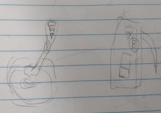
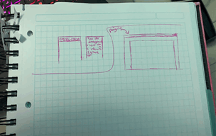

4 Bocetos de solución del equipo de trabajo



TRANSFORMANDO LA SALUD EN EL PERÚ
La diabetes y sus complicaciones son las principales causas de muerte en la mayoría de los países.
La diabetes tipo 2 es el tipo de diabetes más común, y ha aumentado junto a los cambios culturales y sociales. En los países de renta alta hasta un 91% de adultos con la enfermedad tienen diabetes tipo 2. La FID (Internacional Diabetes Federation) estima que 193 millones de personas con diabetes no están diagnosticadas y tienen, por tanto, un mayor riesgo de desarrollar complicaciones.
Además, uno de cada 15 adultos tiene tolerancia a la glucosa alterada. Esta condición está asociada con un mayor riesgo de desarrollar, más tarde en la vida, diabetes tipo 2.
La incidencia de úlceras de pie en personas con diabetes se estimó recientemente en un 25%; esto implica un aumento importante respecto del 2003 donde era del 15%.
Cada año aproximadamente 4 millones de personas con diabetes desarrollan una úlcera, y estas preceden el 85% de las amputaciones.
La diabetes es una de las mayores emergencias mundiales de salud del siglo XXI. Cada año más y más personas viven con esta condición, que puede desencadenar complicaciones a lo largo de la vida.
Además de los 415 millones de adultos que actualmente tienen diabetes, hay 318 millones de adultos con tolerancia a la glucosa alterada, lo que les sitúa en un alto riesgo de desarrollar la enfermedad en el futuro. Muchos países todavía no son conscientes del impacto social y económico de la diabetes.
En esta imagen podemos observar que en los continentes varia el porcentaje de personas que presentan diabetes y su pronosticación para el año 2045.
En esta imagen podemos observar que en los continentes varia el porcentaje de personas que presentan diabetes y su pronosticación para el año 2045.
Choose from the large selection of latest pre-made blocks - full-screen intro, bootstrap carousel, content slider, responsive image gallery with lightbox, parallax scrolling, video backgrounds, hamburger menu, sticky header and more.
Sites made with Mobirise are 100% mobile-friendly according the latest Google Test and Google loves those websites (officially)!
Mobirise themes are based on Bootstrap 3 and Bootstrap 4 - most powerful mobile first framework. Now, even if you're not code-savvy, you can be a part of an exciting growing bootstrap community.
Choose from the large selection of latest pre-made blocks - full-screen intro, bootstrap carousel, content slider, responsive image gallery with lightbox, parallax scrolling, video backgrounds, hamburger menu, sticky header and more.
En el 2018, entre las personas que refirieron haber sido diagnosticadas con diabetes, 71,7%, recibieron y/o compraron los medicamentos con receta médica al menos una vez, para controlar la enfermedad. Se advierte una disminución de 1,6 puntos porcentuales con respecto al 2017. Fue mayor en la población femenina (77,2%) con respecto a la masculina (65,3%).
Por región natural, en el 2018, las personas de 15 y más años de edad que accedieron a medicamentos para tratar la diabetes fueron en Lima Metropolitana el 74,4%; seguido de Resto Costa con 73,8%, Selva con 71,0%; y menor porcentaje en la Sierra con 60,2%.
i. La falta de un buen sistema administrativo que permita que los pacientes una atención adecuada sin ningún tipo de problema. . El Ministerio de Salud (MINSA) reporta que el 60% de los usuarios que efectúan consulta en establecimientos públicos (MINSA / Direcciones Regionales de Salud) terminan gastando en el sector privado, dicha proporción supera el 90% en el Seguro Social por lo cual no se completa el circuito de atención para los pacientes. El surgimiento de esto tendría como causa principal la falta de capacidad de respuesta del sistema de salud.
ii. El alcance adecuado a la subvención a pacientes con pobreza extrema y poblaciones vulnerables. La reducción porcentual del acceso y el número absoluto de personas atendidas, encontrando que en el 2004, el 54,3% (100 mil) de pacientes afiliados al SIS en zonas urbanas y 46% (250 mil) en zonas rurales declaran haber accedido a un establecimiento de salud público del MINSA; mientras que en el 2010, dicho porcentaje fue del 29,1% y 33,6% de los pacientes en zonas urbanas y rurales, respectivamente. En términos absolutos dichos porcentajes representan aproximadamente 350 mil y un millón 190 mil pacientes, respectivamente.
iii. En el Perú, es importante destacar que este incremento en la cobertura de afiliación del SIS, fue acompañado de un crecimiento en el Plan de Beneficios que a partir del año 2006 los casos de emergencia de pacientes de otros grupos de edad en condición de pobreza. Sin embargo, el financiamiento ha bajado a partir del 2016 por lo que el mismo sistema se ha vuelto precario en los últimos años.
2 millones de personas sufren de diabetes en el Perú. Según el INEI, en la costa 8% de las personas sufren diabetes y 7 de cada 1000 no recibe tratamiento, en la sierra 5% de personas sufren diabetes, mientras que en la selva 4% padecen de esta enfermedad. El 50% de personas no está diagnosticada. Esto nos demuestra que el mismo sistema de salud está saturado, lo que aumenta el tiempo del diagnóstico y el costo de su tratamiento se eleva. Además, esperamos que el sistema de salud deje de saturarse, que las personas tomen conciencia de una mejora en la administración del sistema de salud y mejorar el porcentaje de detección temprana de la diabetes en el Perú.
Pacientes asegurados y no asegurados de clase baja entre los 25-60 años ,que con frecuencia acuden a los centro de salud para sus controles y tratamientos para la diabetes.
Elegimos este rango de edades ya que en el Perú las personas ya que más de 9 millones de peruanos de 25-60 años trabajan tanto de manera estable como formal según el INEI.
El avance adecuado de su tratamiento.
La mejora de su salud.
Trabajos informales (obrero, taxi, vendedor, etc.)
No poder desarrollar sus actividades diarias como solían.
Nuestra propuesta está planeada para usar un servicio de servidores propios para poseer toda la libertad para ajustar distintos parámetros que mejoren el servicio, para poder tener acceso al servicio (por cualquier dispositivo que posea la facultad de estar vinculado al internet) en la nube el paciente debe ser invitado por un médico o centro de salud que sean socios de la plataforma de la red de servidores de Cloudsalud, esto permite tener una mejor recolección de información para el doctor y luego de ser estudiada ser enviada al paciente por la misma plataforma.
Un 28,3% no recibe tratamiento a nivel nacional, por lo que el problema principal es que los pacientes no reciben una orientacion adecuada hacia su gran enfermedad.
Falta de motivacion en las personas genera irregularidades en sus dietas, lo que podria producir un aumento en su grucosa.
● Cuando desarrollamos más la conciencia individualista, solo importan nuestras propias necesidades.
● La falta de toma de conciencia provoca un atraso en el desarrollo de la humanidad.
● Los mecanismos mentales y las funciones que cumplen se asientan y realizan sobre las relaciones inmediatas del individuo con su medio.
Estudiante de ingeniería biomedica, me gusta aprender temas nuevos y realizar proyectos.
Estudiante cursando el segundo ciclo de ingeniería biomedica, amo la investigación y pasar tiempo con mis seres queridos.
Estudiante de ingeniería biomédica, cursando su segundo ciclo de manera competente, disfruto estudiar diligentemente todos los días.
Estudiante de ingeniería biomédica, cursando el segundo ciclo, amante de todos los retos que le da esta carrera.